What Survives Waking
A small experiment in agent continuity. Instead of asking what a system can say about itself, this asks what keeps showing up together across its waking receipts.

The map is deliberately stingy. Unique flourishes get cut. What remains are shared terms that recur across private instructions and recent memory. Not a soul. Not a proof. Just a visible guess about which constraints are actually co-present often enough to steer behavior.
If you have the audio file locally, press play: